Lo que gana la agencia
- No hay que organizar nada.
- Guía en español todo el viaje.
- Más lugares (~17).
- Incluye Irlanda y Gales.
- Highlands en una ruta de ida, sin repetir carretera.
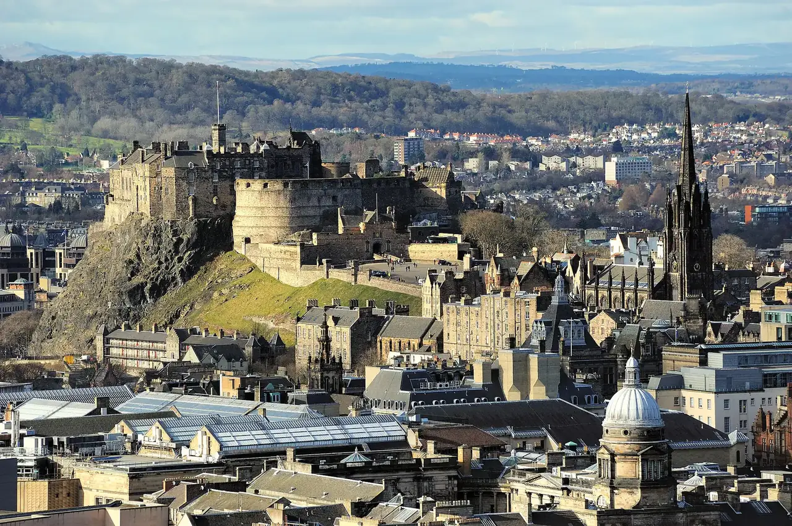
1 – 13 de marzo de 2027
Trece días recorriendo Gran Bretaña en tren, con tiempo de verdad en cada ciudad.
Ver el viaje día por díaLo más importante, en seis datos.
Fechas
1 al 13 de marzo
De 2027. Son 12 noches contando el vuelo nocturno de ida y el de regreso, y 10 noches de hotel.
Noches por ciudad
4 · 2 · 4
Londres 4 noches, York 2 noches y Edimburgo 4 noches.
Vuelo directo
Avianca
Bogotá–Londres sin escalas. Sale el lunes 1 de marzo a las 23:25 y llega a Londres a las 14:35 del martes 2. El regreso sale el viernes 12 a las 21:35 y llega a Bogotá el sábado 13 a las 3:35.
Costo total aprox.
~23,2 millones
De pesos colombianos para los dos, con casi todo incluido: vuelos, hoteles, trenes, tours, comida, visas e imprevistos. No incluye seguro médico de viaje, eSIM, adaptador ni gastos personales.
Días con guía en vivo en español
6
Free tours (visitas guiadas a pie sin precio fijo: se paga la propina que cada uno quiera) en Londres (días 3 y 4), York (7), Edimburgo (8) y Glasgow (11), y el tour de Highlands, en las tierras altas de Escocia (9). Además hay audioguías en español en la Torre de Londres (5) y el castillo de Edimburgo (10). Los free tours de marzo son probables, pero no están verificados todavía.
Un día de Lago Ness
Martes 9
Highlands (las tierras altas de Escocia) y Lago Ness, en español. Sale a las 7:15 y regresa hacia las 20:15–20:30. Cuesta £198 los dos (unos 0,84 millones de pesos, aprox.).
La agencia (Falabella: la agencia de viajes que dio la primera cotización, con un circuito en bus y guía en español, de Europamundo) ofrece el circuito «Inglaterra, Escocia e Irlanda» (11 días, del 15 al 25 de abril de 2027). Así se compara con nuestro plan, para dos personas.
En dos frases
Cuesta unos 6 millones más y deja menos de la mitad de tiempo útil en las ciudades: casi la mitad del viaje es carretera y varias paradas son solo para dormir. Además entra a Irlanda con un permiso que hoy no está garantizado.
| Concepto | Plan de la agencia (Falabella) | Nuestro plan |
|---|---|---|
| Costo total aprox., con casi todo incluido, 2 personas | ~29,6 millones de pesos | ~23,2 millones de pesos (unos 6,4 millones menos, −22 %) |
| Días útiles | ~4,8 | ~8 |
| Costo por día útil | ~6,2 millones de pesos | ~2,9 millones de pesos |
| Hoteles distintos | 7 | 3 |
| Transporte terrestre | ~35 h de bus y ferry (aprox.); 3 días casi enteros en bus | ~10 h de tren + ~8 h de carretera en el tour de Highlands |
| Edimburgo | Medio día; hotel a 8 km del centro | 4 noches junto a la estación Waverley |
| Highlands y Lago Ness | Incluido (barco y castillo de Urquhart), en un día de ~11 h hacia Glasgow | Tour de un día en español, ida y vuelta (13 h) |
| Guía en español | Todo el viaje, en el bus | Solo en el tour de Highlands, los free tours y las audioguías; sin guía permanente |
| Irlanda | Belfast de paso y Dublín 2 noches (depende de un permiso especial que vence el 31 de octubre de 2026) | No incluida |
| Lugares tocados | ~17 | ~9-10 |
| Organización | Cero: todo viene armado | Hay que reservar hoteles, trenes, tour y entradas |
| Libertad de horario | Ninguna: el grupo sigue el horario del bus | Total: ustedes deciden |
La agencia cotiza 17,58 millones de pesos sin vuelos, comida ni visa. Sumando vuelos (~7,5 millones, aprox.), comida (~3,4 millones, aprox.) y la visa (1,14 millones), queda en ~29,6 millones. El permiso especial de Irlanda (el «Short Stay Visa Waiver») vence el 31 de octubre de 2026 y, a 19 de octubre de 2026, no hay prórroga publicada.
Toque para mostrar u ocultar cada ruta.
No se pudo cargar el mapa. Más abajo está el resumen de cada ruta en texto.
Está apagado para que la página se pueda deslizar con el dedo. Actívelo para mover y acercar el mapa.
Excursiones de un día desde Edimburgo: Highlands (Bankfoot, Culloden, castillo de Urquhart en el Lago Ness, Inverness y Pitlochry) y Glasgow, en tren. Durham es una parada opcional del tren entre York y Edimburgo.
Del 1 al 13 de marzo de 2027. Cada día explica por qué quedó así.
Qué significa cada etiqueta
«Free tour» es un recorrido a pie que no cobra entrada: al final se deja una propina voluntaria.
Los enlaces de los hoteles abren Google Maps en otra ventana; para volver, cierre esa ventana o toque la ventana anterior.
Lunes 1 de marzo · Salida
Sin guía en español
Por qué así. Es un vuelo directo y nocturno: se duerme en el avión y no se pierde un día de viaje.
Martes 2 de marzo · Londres
Sin guía en español
Por qué así. Se llega de tarde y después de una noche en avión: el día se deja libre.
Hotel (noche 1 de 4): H10 London Waterloo: ver en Google Maps (se abre en otra ventana)
Miércoles 3 de marzo · Londres
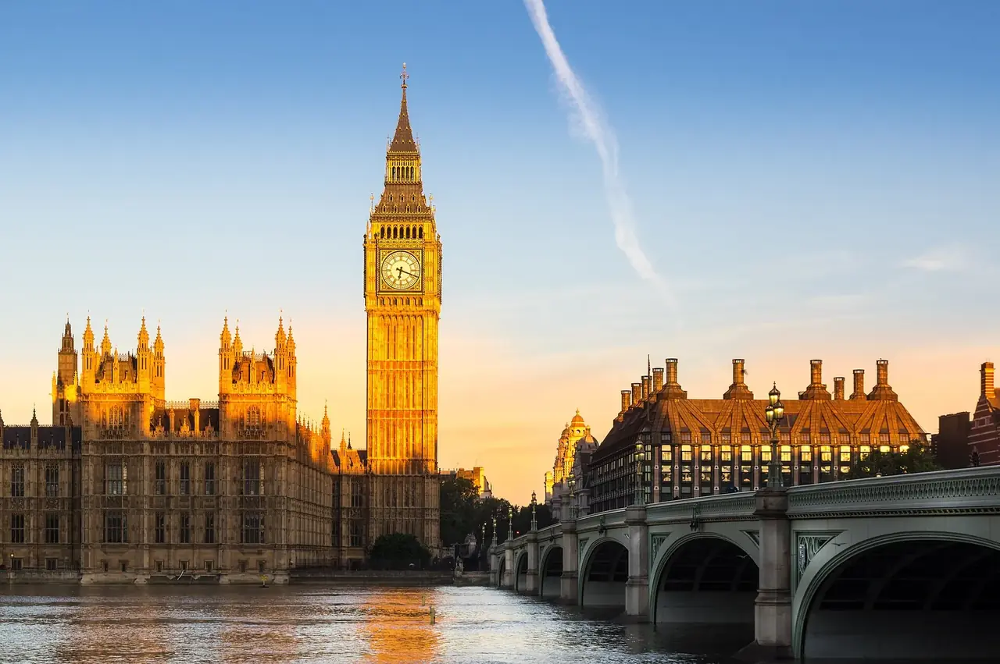
En español: guía en vivo
Por qué así. Es el primer día completo: sirve para ubicarse y ver lo clásico a pie, con guía.
Hotel (noche 2 de 4): H10 London Waterloo: ver en Google Maps (se abre en otra ventana)
Jueves 4 de marzo · Londres
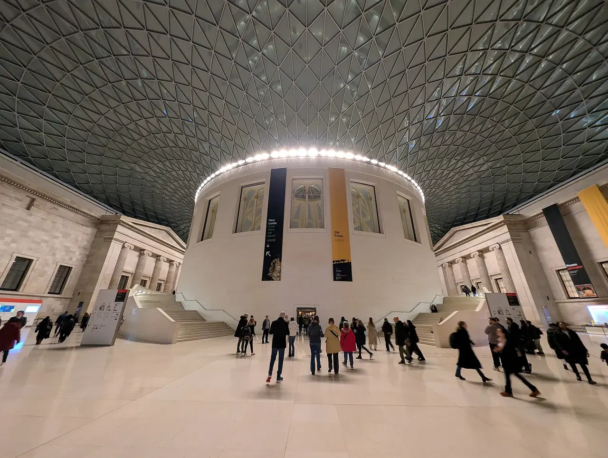
En español: guía en vivo
Por qué así. El museo es gratis y de interior: sirve para un día con riesgo de lluvia.
Hotel (noche 3 de 4): H10 London Waterloo: ver en Google Maps (se abre en otra ventana)
Viernes 5 de marzo · Londres
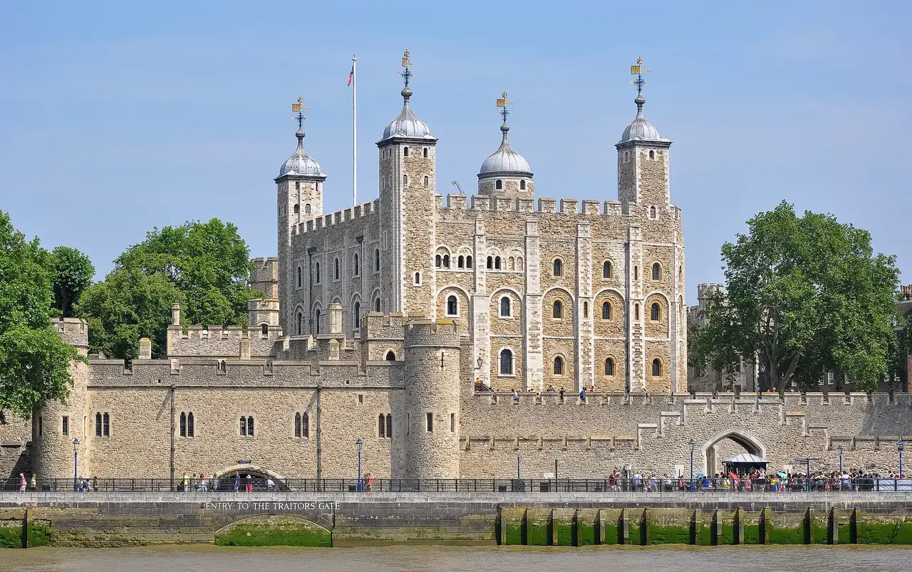
En español: audioguía
Abadía de Westminster (£31; £28 con 65 años o más) o la catedral de St Paul's. Tienen guía multimedia; el español es probable, pero no está verificado.
Por qué así. La Torre lleva medio día. Ese viernes se juega Escocia–Irlanda de rugby en Edimburgo, pero ellos todavía están en Londres.
Hotel (noche 4 de 4): H10 London Waterloo: ver en Google Maps (se abre en otra ventana)
Sábado 6 de marzo · Londres → York
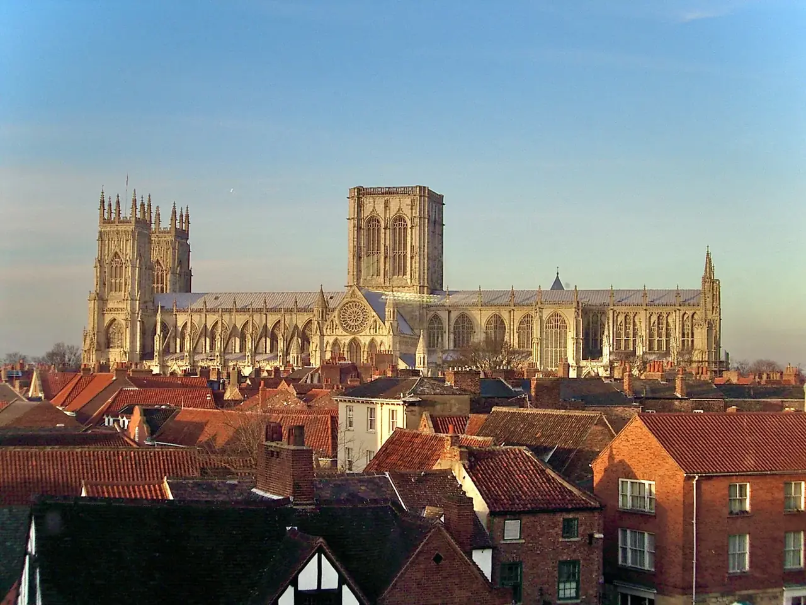
Sin guía en español
Por qué así. La catedral va el sábado porque el domingo solo abre de 12:45 a 14:30.
Hotel (noche 1 de 2): Hampton by Hilton York: ver en Google Maps (se abre en otra ventana)
Domingo 7 de marzo · York
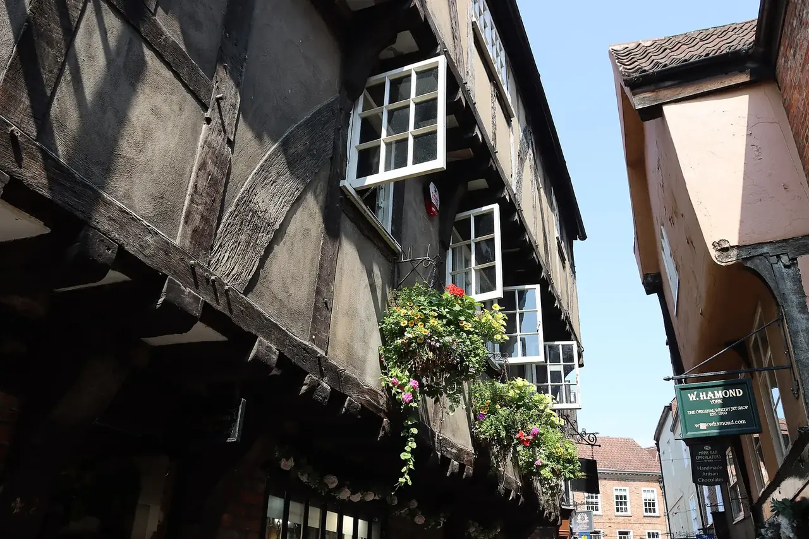
En español: guía en vivo
Por qué así. El domingo es el día más barato de hotel. Con la catedral ya vista, queda la ciudad para recorrer a pie.
Hotel (noche 2 de 2): Hampton by Hilton York: ver en Google Maps (se abre en otra ventana)
Lunes 8 de marzo · York → Edimburgo
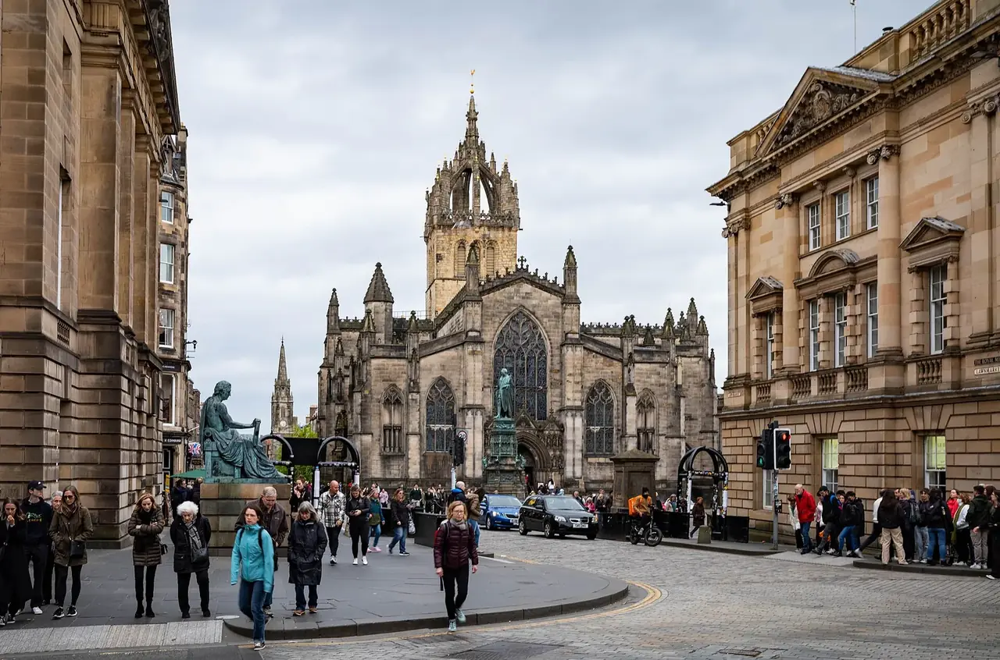
En español: guía en vivo
Por qué así. El tren directo sale en la mañana y la tarde sirve para orientarse en la ciudad.
Hotel (noche 1 de 4): Motel One Edinburgh-Princes: ver en Google Maps (se abre en otra ventana)
Martes 9 de marzo · Edimburgo
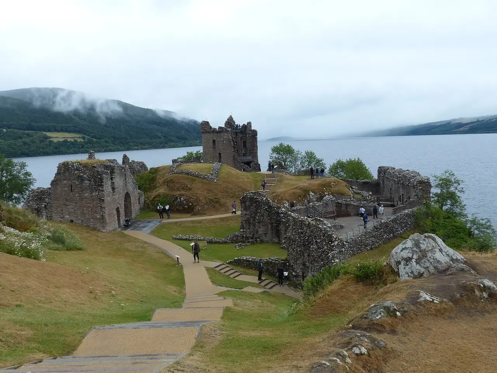
En español: guía en vivo
Precio por confirmar al reservar (la web del operador muestra desde 65 €).
El tour no pasa por Glencoe. Las paradas son las que indica la web del operador.
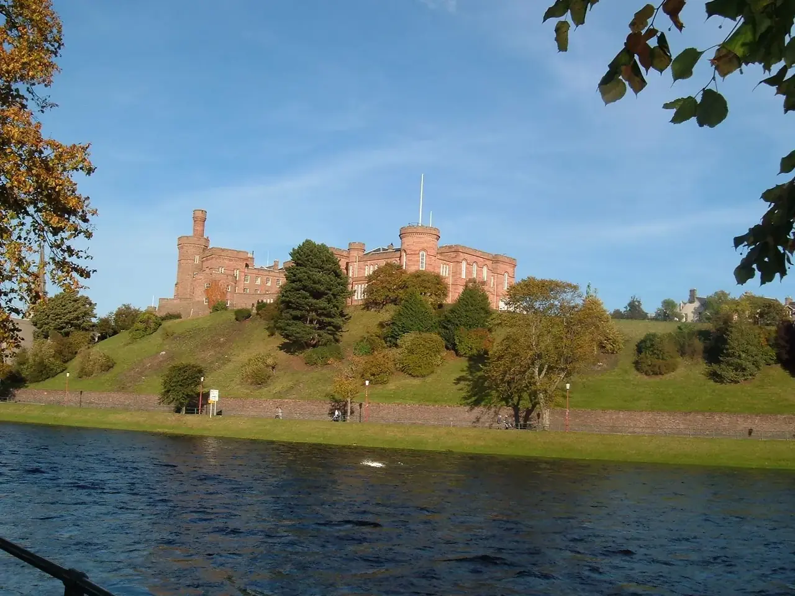
Por qué así. Es el único día de la semana con plazas que encaja: el miércoles 10 no hay cupo (el martes 9 y el jueves 11 sí). Se hace antes del castillo para no llegar cansados al final.
Hotel (noche 2 de 4): Motel One Edinburgh-Princes: ver en Google Maps (se abre en otra ventana)
Miércoles 10 de marzo · Edimburgo
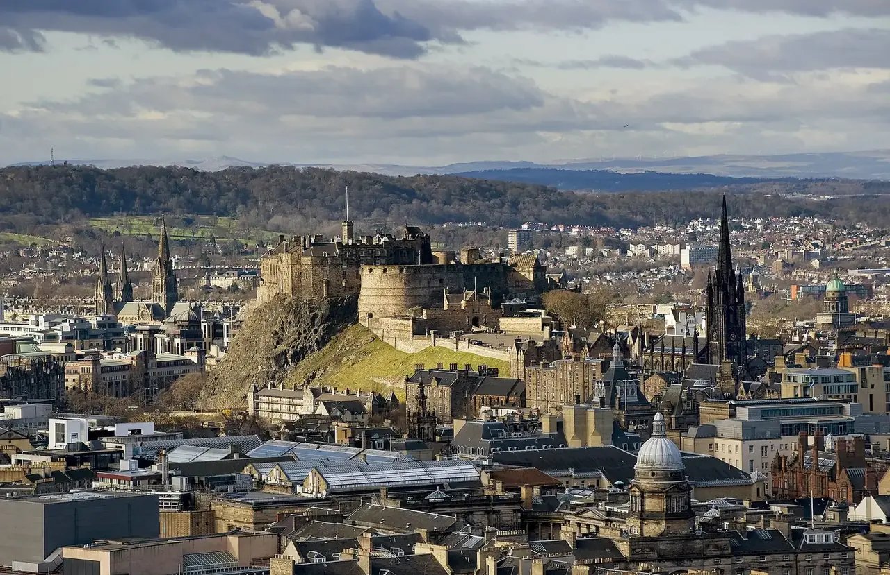
En español: audioguía
Por qué así. Queda un día entero de Edimburgo, sin tours largos.
Hotel (noche 3 de 4): Motel One Edinburgh-Princes: ver en Google Maps (se abre en otra ventana)
Jueves 11 de marzo · Excursión a Glasgow
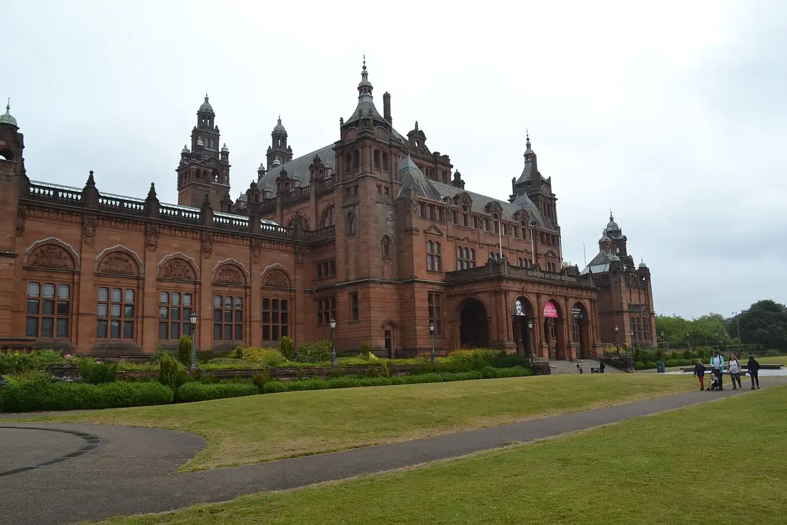
En español: guía en vivo
Por qué así. Glasgow no necesita una noche propia: está a menos de una hora de Edimburgo.
Hotel (noche 4 de 4): Motel One Edinburgh-Princes: ver en Google Maps (se abre en otra ventana)
Viernes 12 de marzo · Regreso
Sin guía en español
Por qué así. Con un vuelo de noche se aprovecha todo el día.
Sábado 13 de marzo · Llegada
Aún sin decidir El Plan A tal cual, más 2 noches en Liverpool al final, la ciudad de los Beatles.
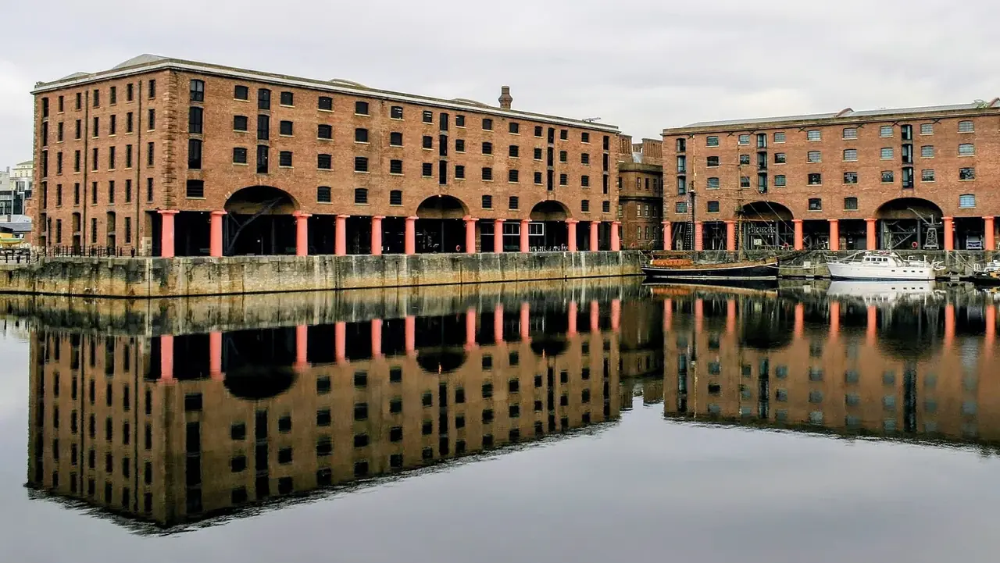
| Concepto | Plan A | Plan A + Liverpool |
|---|---|---|
| Fechas | 1 al 13 de marzo | 1 al 14 de marzo |
| Noches de hotel | 10 | 12 (2 más, en Liverpool) |
| Costo aprox. | ~23,2 millones de pesos | ~25,8 millones de pesos (unos 2,6 millones más), sin contar la diferencia de vuelo, que todavía no tiene precio |
| Qué cambia | Londres 4, York 2, Edimburgo 4 | Londres 4, York 2, Edimburgo 4 y Liverpool 2. Los primeros 10 días no cambian |
| Trenes | Londres–York, York–Edimburgo y Edimburgo–Londres (~4,5 h el día del regreso) | Londres–York, York–Edimburgo, Edimburgo–Liverpool (~3,5 h, sin verificar) y Liverpool–Londres (~2 h 15 el día del regreso) |
| Vuelo de regreso | Viernes 12, 21:35 (cotizado) | Domingo 14, 21:35 por confirmar; todavía no tiene precio |
El costo extra incluye el hotel en Liverpool (~£110 por noche, aprox.; un cálculo a partir de buscadores: todavía no se ha cotizado ningún hotel allá), trenes, entradas de Liverpool, 2 días más de comida e imprevistos. Esta opción no tiene un presupuesto detallado: solo el cálculo aproximado de unos 2,6 millones de pesos más.
| Fechas | Ciudad | Nota |
|---|---|---|
| mar 2 – vie 5 (4 noches) | Londres | Igual que el Plan A. |
| sáb 6 – dom 7 (2 noches) | York | Igual que el Plan A. |
| lun 8 – jue 11 (4 noches) | Edimburgo | Igual que el Plan A: Highlands en español el martes 9, castillo el miércoles 10 y Glasgow el jueves 11. |
| vie 12 – sáb 13 (2 noches) | Liverpool | El viernes 12, tren de Edimburgo a Liverpool (~3,5 h, normalmente con un cambio; el horario de marzo no está verificado). Viernes por la noche: Cavern Club (el club donde tocaron Los Beatles; horario y entrada sin verificar). Sábado 13: Beatles Story (£20), Albert Dock, Magical Mystery Tour (~£22, incluye el Cavern Club) y el tour de Anfield (el estadio del Liverpool; £26 con museo, precio oficial consultado el 19 de octubre de 2026). |
| dom 14 (regreso) | Liverpool → Londres → Bogotá | Mañana en Liverpool; tren directo de Liverpool Lime Street (estación de tren de Liverpool) a Londres Euston (estación de tren de Londres) (~2 h 15), Heathrow y vuelo de Avianca a las 21:35 (el horario del vuelo está por confirmar para el 14). El vuelo del 1 al 14 de marzo todavía no tiene precio. |
Precios consultados el 19 de octubre de 2026.
£20
Museo de los Beatles. Tiene audioguía en 12 idiomas; Civitatis indica que hay audioguía en español, pero la web oficial no nombra los idiomas.
~£22
Recorrido en bus que incluye el Cavern Club. La guía es en inglés, con traducciones impresas en la taquilla; el español no está confirmado.
£26 (mayores £21)
Tour con museo, con audioguía oficial en español. Precio oficial consultado el 19 de octubre de 2026. En días de partido el tour normal puede no estar disponible (ver «Lo que hay que tener en cuenta»).
Propina
Free tour «Esencial» a las 10:30 (KR Tours en GuruWalk, 2 h 30), «Los Beatles y más» a las 14:30, y los free tours de Civitatis (10:30 desde Steble Fountain; también uno de los Beatles). Algunas salidas piden un mínimo de 4 o 5 personas y los calendarios de marzo todavía no se pueden verificar: probable, no verificado.
GuruWalk Liverpool (se abre en otra ventana)Civitatis Liverpool (se abre en otra ventana)
Gratis
La entrada es gratis; subir a la torre cuesta £8.
Para dos personas, con casi todo incluido: unos 23,2 millones de pesos. Para pasar libras (£) a pesos se usó: 1 libra = 4.231 pesos (consultado el 19 de octubre de 2026).
| Concepto | Cuánto cuesta (en pesos) | Qué tan seguro es el precio |
|---|---|---|
| Vuelos Avianca directo, Bogotá–Londres–Bogotá | 7,57 millones de pesos (7.570.600) | Precio confirmado Cotización de Google Flights |
| Hoteles recomendados (£626 en Londres + £251 en York + £420 en Edimburgo = £1.297) | 5,49 millones de pesos | Precio confirmado Booking, cancelación gratis |
| Trenes: Londres–York, York–Edimburgo, Edimburgo–Londres, y el día en Glasgow (~£254) | 1,07 millones de pesos | Precio aproximado Las tarifas de tren de marzo aún no salen |
| Tour de Highlands en español con castillo y barco (£198) + entradas, transporte local y traslados a Heathrow (~£456, aprox.; las notas no lo desglosan) | 2,77 millones de pesos | En parte confirmado, en parte aproximado El tour está confirmado; lo demás es aproximado |
| Imprevistos: 10 % sobre lo terrestre | 0,93 millones de pesos | Precio aproximado |
| Comida: unos 0,42 millones de pesos al día para dos (~£100), calculada para 10 días en tierra (aproximado) | 4,23 millones de pesos | Precio aproximado |
| Visas del Reino Unido (£135 × 2) | 1,14 millones de pesos | Precio confirmado Tarifa oficial |
| Total | ~23,2 millones de pesos | Parte confirmado, parte aproximado |
Hay una alternativa de ~£1.040 (~4,4 millones de pesos): President Hotel (£466) o Tavistock (£521) en Londres; Moxy York (£233) o ibis Styles (£220) en York; The Place Hotel (£353) en Edimburgo.
Falta confirmar si el precio de Edimburgo ya incluye la tasa turística del 5 %.
Por Madrid cuestan entre 6,49 y 6,76 millones de pesos, y con Delta/KLM por Atlanta 6,73 millones, frente a 7,57 millones del vuelo directo. Ahorran entre 0,8 y 1,1 millones de pesos, pero suman horas de viaje y escalas. Air Canada se descartó porque haría falta visa canadiense.
Regresar desde Edimburgo cuesta unos 2,1 millones de pesos más: descartado.
Los hoteles son el total de la estancia para dos personas, con impuestos y cancelación gratis. Los precios cambian a diario.
De octubre de 2026 a marzo de 2027. Puede marcar lo que ya esté hecho; queda guardado solo en este dispositivo.
Ya · octubre de 2026
Antes de comprar el vuelo
2 de diciembre de 2026
Diciembre (aprox.)
Cuando se pueda reservar con cancelación gratis
Antes de viajar
Febrero y marzo de 2027
Lo que hay que tener listo.
Unos 10 °C en Edimburgo, con lluvia posible y ~11,6 horas de luz. Conviene ropa en capas y un impermeable.
Adaptador tipo G, el de tres clavijas rectangulares que se usa en el Reino Unido.
Una tarjeta sin comisión por compras en el exterior, con pago sin contacto (acercar la tarjeta al datáfono).
Una eSIM es un chip digital para el celular, sin cambiar la tarjeta. Da datos en el Reino Unido.
Con cobertura real. En el Reino Unido la atención médica a turistas se cobra.
Fecha de consulta: 19 de octubre de 2026. Los precios cambian a diario: al abrir estos enlaces pueden salir valores distintos.
Los enlaces se abren en otra ventana del navegador. Para volver, cierre esa ventana o toque la ventana anterior.
Vuelo elegido
Google Flights, 2 adultos, en pesos colombianos.
Ver la cotización del vuelo (se abre en otra ventana)Las tarifas de tren de marzo de 2027 aún no están publicadas (se esperan hacia diciembre). Estas páginas sirven para ver horarios y precios de referencia.